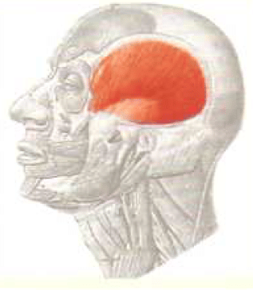
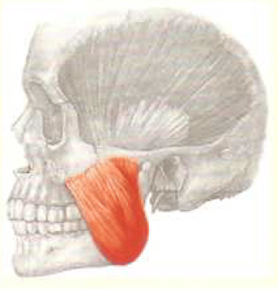
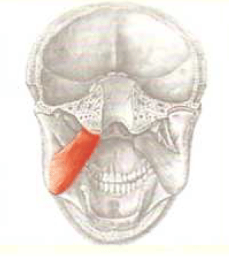
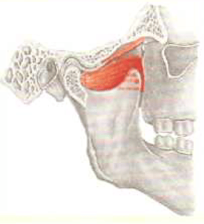
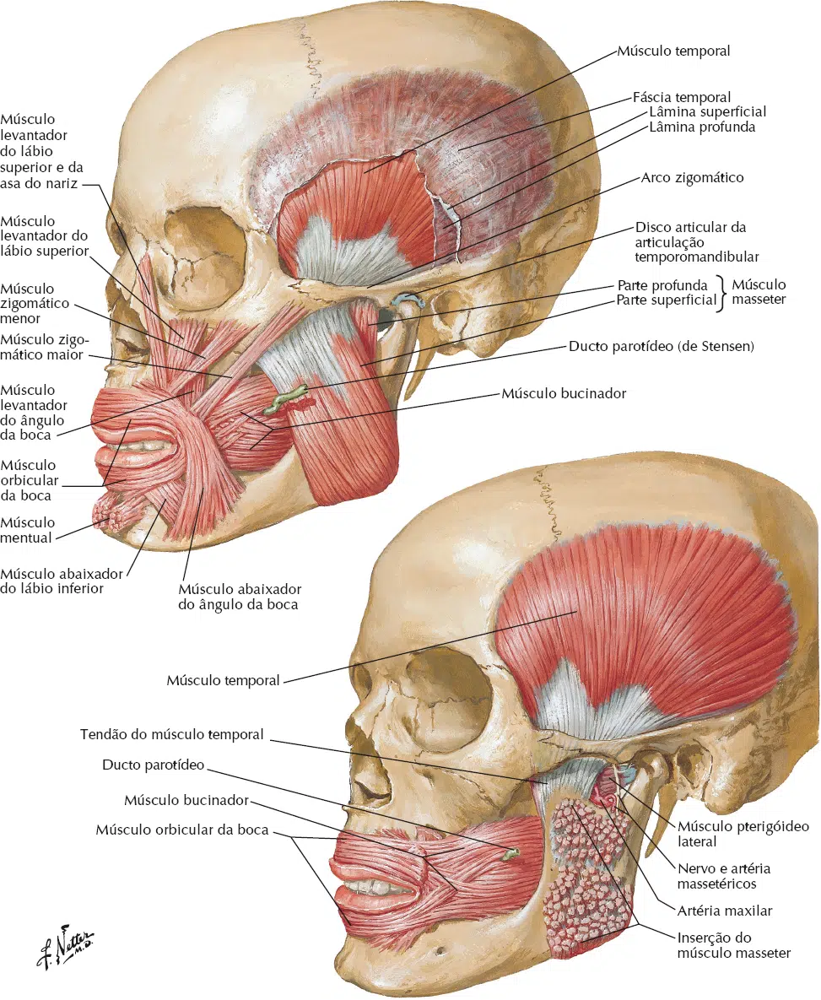
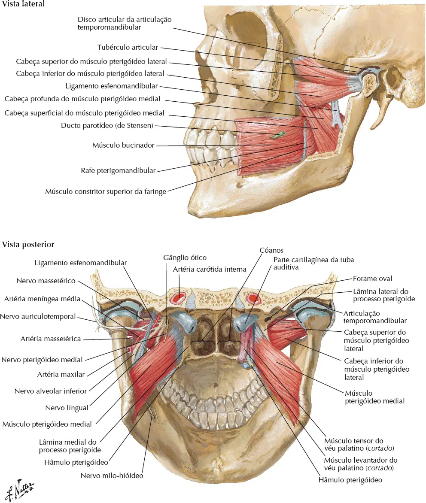

Origem: Face externa do temporal.
Inserção: Processo coronóide da mandíbula e face anterior do ramo da mandíbula.
Inervação: Nervo temporal (Ramo mandibular do nervo Trigêmeo – V Par Craniano).
Ação: Elevação (oclusão) e retração da mandíbula.

Origem: Arco zigomático.
Inserção:
Fascículo Superficial: Ângulo e ramo da mandíbula.
Fascículo Profundo: Ramo e processo coronóide da mandíbula.
Inervação: Nervo massetérico (Ramo mandibular do nervo Trigêmeo – V Par Craniano).
Ação: Elevação (oclusão) da mandíbula.

Origem: Face medial da lâmina lateral do processo pterigóideo do osso esfenóide.
Inserção: Face medial do ângulo e ramo da mandíbula.
Inervação: Nervo do pterigóideo medial (Ramo mandibular do nervo Trigêmeo – V par craniano).
Ação: Elevação (oclusão) da mandíbula.

Origem:
Cabeça Superior: Asa maior do esfenóide.
Cabeça Inferior: Face lateral da lâmina lateral do processo pterigóide do osso esfenóide.
Inserção:
Cabeça Superior: Face anterior do disco articular
Cabeça Inferior: Côndilo da mandíbula.
Inervação: Nervo do pterigoideo lateral (Ramo mandibular do nervo Trigêmeo – V par craniano).
Ação: Abertura da boca e protrusão da mandíbula. Move a mandíbula de um lado para o outro.


